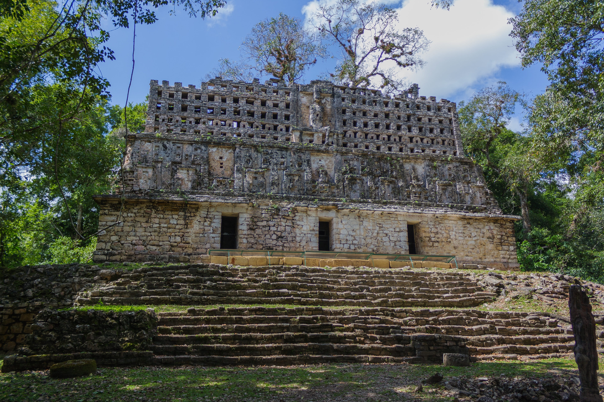
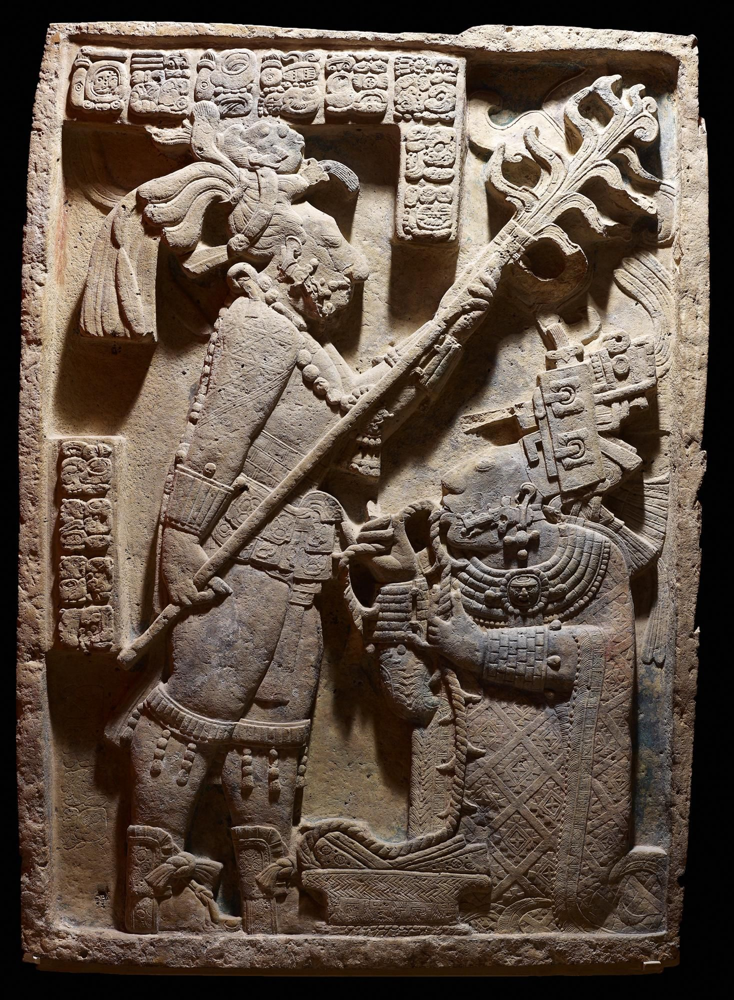

Tikal
W sercu gwatemalskiej dżungli, otoczone przez gęstą roślinność leży jedno z ważniejszych miast cywilizacji Majów. W centrum ceremonialnym znajdują się wspaniałe świątynie i pałace, a także place, do których można się dostać za pomocą ramp. Tikal jest największym i prawdopodobnie najstarszym miastem Majów, jako że jego historia się dziesiątego wieku p.n.e. Jeśli masz ochotę na wyprawę wgłąb dżungli w poszukiwaniu starożytnych świątyń, Tikal jest miejscem dla Ciebie.
Tulum

Tulum położone w południowo-wschodnim Meksyku, było ostatnie wielkim miastem zbudowanym i zamieszkałym przez Majów pomiędzy trzynastym i piętnastm wiekiem. Największym atutem tego miejsca jest jego lokacja. Miasto zostało zbudowane na urwisku z widokiem na wschodzące słońce i jest jedyną osadą majów leżącą na plażach Karaibów. Dzięki temu Tulum stało się ważnym ośrodkiem handlowym imperium. Do dnia dzisiejszego zachowały się liczne budynki, rozłożone na zadbanych trawnikach i klifach. Ruiny te znajdują się w południowo-wschodnim Meksyku, około 125km od miasta Cancún. Te dwa miejsca są ze sobą dobrze połączone, więc dotarcie do tych niesamowitych ruin nie powinno być dużym problemem. Jeśli szukasz pięknego miejsca na wakacje lub okazji do poznania kultury i historii Majów, Tulum jest idealną destynacją.
Palenque

Palenque leży na porośniętych lasem wyżynach południowego Meksyku. Miasto swoją historią sięga 700 roku p.n.e. Z badań wynika, że była to nekropolia i miejsce sakralne. Miasto to było niegdyś jednym z najważniejszych miast Majów. Jego populacja sięgąła nawey miliona mieszkańców, co ostatecznie było przyczyną jego upadku - okoliczne surowce nie były w stanie wszystkich wyżywić ludzi. Pomimo tego, że udostępniona do zwiedzania przestrzeń jest dość mała, wyjątkowość scenerii, zachowana sztuka Majów i skarby znajdujące się w grobowcach wyróżniają ruiny Palanque spomiędzy innych.
Chichén Itzá

Wiekowe ruiny Chichén Itzá śa bez wątpienia jednym z najsłynniejszych zabytków archeologicznych Meksyku, a nawet świata. Miasto zostało wybudowane około 8 wieku n.e. i szybko stało się gospodarczym centrum regioniu. Ruiny zostały wpisane na listę Nowym 7 Cudów Świata. Historia drzemiąca w tych ruinach, świadectwo zaawansowanie technologicznego Majów i łatwy dostęp do pobliskich miast jak Cancún i Playa del Carmen robią z Chichén Itzá idealne miejsce do odwiedzenia.
Yaxchilán
Yaxchilán jest prawdziwym zaginionym miastem ciągle otoczonym przez gęstą roślinność. Ruiny są położone głęboko w dżungli Lacandón, przez co jedynym sposobem by się do niego dostać jest przeprawienie się przez rzekę przy użyciu łodzi. Na miejscu można odnaleźć imponujące ruiny pałaców i świątyń. Yaxchilán jest znany z dużej ilości rzeźb - monolitów oraz płaskorzeźb wykonanych na drzwiach świątyń.
Uxmal
Uxmal było niegdyś jednym z najważniejszych i najpotężniejszych z miast całego imperium Majów. Jego budowa rozpoczęła się pomiędzy siódmym a dziewiątym wiekiem, u swojego szczytu potęgi zamieszkiwało je około 25 tysięcy ludzi. W momencie odkrycia przez konkwistadorów było opuszczone i nie stanowiło dla nich większej wartości, dlatego też nie zniczyli miasta. Dzięki temu architektura tego miejsca i kompleksy budynków zachowały się w niemal idealnym stanie. Dzisiaj, te niesamowite ruiny pozwalają turystom zrozumieć styl życia starożytnych ludzi.
Edzná
Edzná to ruiny miasta Maj w północnej części meksykańskiego stanu Campeche.
Najbardziej niezwykłą budowlą w tym miejscu jest główna świątynia znajdująca się na placu. Zbudowana na platformie o wysokości 40 m zapewnia szeroki widok na okolicę.
Innym znaczącym budynkiem znajdującym się na placu jest boisko do piłki nożnej. Boisko do piłki tworzą dwie równoległe struktury. Górne pomieszczenia boiska były prawdopodobnie używane do przechowywania wizerunków bogów związanych z wydarzeniami, wraz z przedmiotami potrzebnymi do gry.
British Museum
Nie trzeba podróżować na drugi koniec świata by poznać świat cywilizacji prekolumbijskich. British Museum w Londynie jest w posiadaniu imponującej kolekcji rzeźb, sztuki Majów.